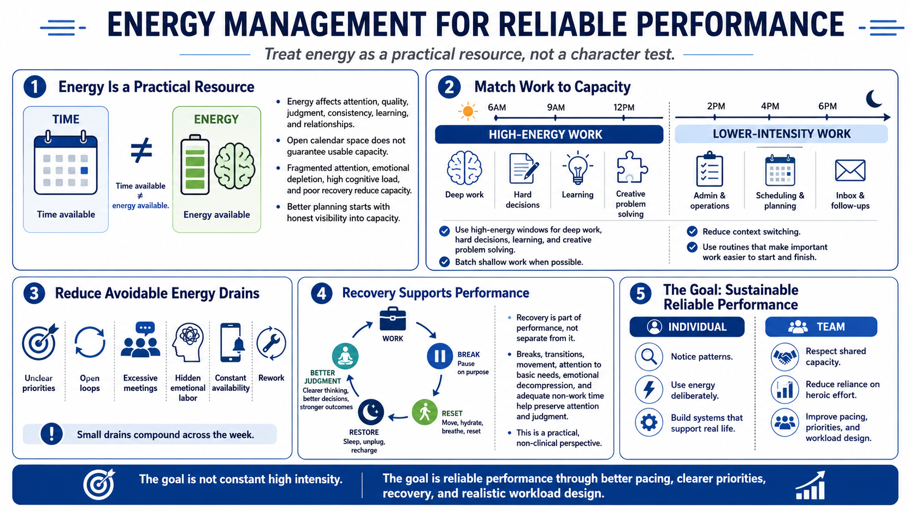

Course Summary and Key Takeaways
Connecting to LMS... Progress: in progress

Narration
Energy is a practical resource that affects attention, quality, judgment, consistency, learning, and relationships. It is not the same as time, motivation, or discipline. Open calendar space may still lack usable capacity if attention is fragmented, emotional energy is depleted, cognitive load is high, or recovery has been neglected. Better planning begins by seeing capacity honestly.
Strong energy management matches work to capacity. It uses high-energy windows for demanding work, batches shallow work where possible, reduces context switching, and designs routines that make important work easier to start and finish. It also reduces avoidable drains such as unclear priorities, open loops, excessive meetings, hidden emotional labor, constant availability, and rework.
Recovery is not separate from performance. It is one of the conditions that makes sustainable performance possible. Breaks, transitions, movement, broad attention to basic needs, emotional decompression, and adequate non-work time all help preserve attention and judgment. This course stays non-clinical, but it is practical to recognize that people produce better work when they are not treated like machines.
The goal is not constant high intensity. The goal is reliable performance through better pacing, clearer priorities, recovery, and realistic workload design. At the team level, this means respecting shared capacity and reducing reliance on heroic effort. At the individual level, it means using energy deliberately, noticing patterns, and building systems that support real life rather than pretending limits do not exist.